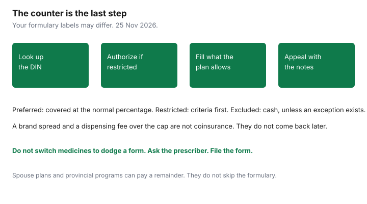

Insurance · Canada
How to Maximize Canadian Workplace Drug Coverage Without Surprise Pharmacy Bills
The surprise is rarely the existence of a drug plan. It is the price at the counter after the plan has applied a rule nobody opened: the drug is restricted, a cheaper drug had to be tried first, the dispensing fee is capped, or the spouse’s plan was never billed. Maximizing coverage means using the rules in order, before the prescription is written when you can, and appealing with the clinical notes when a denial is wrong. It does not mean switching medicines to chase a copay, and it does not mean ignoring a provincial catastrophic program that may sit under the workplace plan. This page is that sequence for Canadian group drug plans. It is education. Your booklet and your pharmacist’s adjudication are the decision.
If you have no workplace plan at all, start with the gap-coverage guide. If two employers both cover the family, the order of payment is on the coordination guide. This page is what happens inside one drug plan, and how the second plan and the province fit behind it.
Disclosure: Education only. There is no product to buy in this workflow. Saving Optimizer does not claim a partnership with any insurer, pharmacy, or drug manufacturer. Plan rules were described from public program pages read on 25 Nov 2026. Your formulary controls. This is not medical advice and not tax advice.
Key takeaways
- Look the drug up as preferred, restricted, or excluded before you leave the prescriber. A restricted drug needs prior authorization or step therapy. An excluded drug is cash, unless an exception exists.
- Start prior authorization early. A pharmacy cannot invent an approval on a Friday evening.
- Dispensing fees are part of the bill. A 90-day maintenance fill is only a saving when the plan pays it and you will use the tablets.
- Spouse plans and provincial catastrophic programs can pay the remainder. They do not replace the formulary. Québec students have a specific RAMQ drug order.
- Appeal a denial with the diagnosis, what you already tried, and why the alternative failed. Do not switch drugs solely to avoid the paperwork.
Read the formulary: preferred, restricted, and excluded drugs
A formulary is the list the plan will consider. Insurers publish it to members, sometimes inside the claims site rather than the PDF booklet. Three labels do most of the work:
| Label you may see | What it usually means | What to do before the pharmacy |
|---|---|---|
| Preferred or regular benefit | Covered at the plan’s normal percentage after any deductible, often with a lower copay than a brand the plan considers interchangeable. | Ask the prescriber if a preferred molecule treats the same problem. If you need the brand, ask why, and write it down. You may need it for an authorization later. |
| Restricted, special authorization, or prior authorization | Covered only if the plan approves it against clinical criteria: diagnosis, dose, and drugs already tried. | Do not fill a month at cash prices “just this once” if the approval can be started today. Ask the prescriber to send the form. |
| Excluded | Not a benefit. Lifestyle drugs, compounded items, and drugs the plan has dropped are common examples. The booklet lists categories. | Confirm the DIN, not the brand nickname. A different strength or a generic can be listed when the brand you were quoted is not. If it is truly excluded, price cash, a manufacturer program, or an appeal. Do not assume the spouse’s identical booklet is more generous. Check it. |

Generic substitution is a plan rule, not a suggestion, unless the prescriber has written “no substitution” and the plan accepts that notation. Some plans pay only the generic price even when the brand is dispensed, and you pay the difference. That difference is not a deductible. It will not be reimbursed later as if it were coinsurance. Ask the pharmacist, before they submit, “what will I owe, and is any of it a brand spread the plan will never pay?”
Annual maximums still exist on some group plans, especially for specialty drugs or for the plan as a whole. A percentage coinsurance with no maximum is a different promise from 80 percent up to $5,000 a year. Copy the maximum onto the same page as the formulary status. A preferred drug you cannot afford after the maximum is not preferred in any practical sense.
Prior authorization and step therapy—start early with your doctor
Prior authorization is the plan’s agreement to pay for a restricted drug for you, for a period, if criteria are met. Step therapy is the subset that requires you to try a listed first-line drug, or to show that you already did and it failed or caused harm. Both are paperwork with a clinical standard. Neither is the pharmacist deciding your treatment.
- Ask the prescriber which DIN they intend to use. Look it up on the member site the same day.
- If the status is restricted, ask the office to submit the insurer’s form, not a letter that misses the criteria. The form asks for diagnosis codes, previous drugs, dates, and outcomes. A letter that says “patient needs this” is how files sit in a queue.
- Ask how long approval lasts. Many authorizations are six or twelve months and then need renewal. Put the expiry in a calendar. A lapsed approval looks like a sudden price increase and is actually a lapsed form.
- If you are stable on a drug from a previous employer’s plan, the new plan can still require its own authorization. The old approval does not transfer. Start the new form during enrolment, before the first refill is due.
Do not stop a current medicine, or start a step-therapy drug, only because a form is slow. That is a clinical decision for the prescriber. The plan’s delay is a billing problem. Tell the office it is delayed. Ask whether samples, a short cash fill, or a manufacturer program is appropriate while the file is open. Get that advice from the clinician, not from the receipt.
Keep a copy of what was tried: drug name, dose, dates, and why it stopped. Step therapy denials are often “insufficient evidence of failure,” which means the form was thin, not that the symptom was imaginary. The appeal section below is where that record goes.
Dispensing fee and maintenance-medication fill strategies
The ingredient cost and the dispensing fee are separate lines. Plans often cap the fee they will reimburse, or they pay a fee only every so many days. A pharmacy that charges more than the cap leaves the difference with you, on every refill. That difference is a quiet annual cost.
- Ask the plan’s fee cap and the pharmacy’s fee before you transfer a maintenance drug. A lower fee on a drug you take all year beats a one-time gift card.
- 90-day fills. Many plans pay a dispensing fee less often if you fill a three-month supply of a stable maintenance drug. Some pay only a 30-day supply for a new drug or a controlled drug. Ask the pharmacist to submit the longer fill and read the adjudication. If the plan refuses the 90-day supply, you have not saved a fee. You have bought tablets the plan will not pay for.
- Do not over-fill a drug you may stop. A 90-day supply of a medication your prescriber is still adjusting is waste, and wasted tablets are not a claim. Use a longer fill after the dose is stable.
- Vacation supplies. A plan may allow an early refill for travel. Ask before you are at the airport. An early refill that the plan treats as “too soon” becomes cash, and a later refill may be rejected as already dispensed.
- Coordination at the counter. If a spouse’s plan is second payer, the pharmacy needs both cards and the right order. The coordination guide is the birthday rule and the explanation of benefits. A dispensing fee the first plan capped can sometimes be considered by the second plan, up to the second plan’s own cap. It is not automatically paid twice.
Coordinate spouse plans and provincial catastrophic drug programs where they exist
The workplace plan is not always the only payer, and it is not always the last. The sequence depends on where you live and whether a public plan is in force.
- A spouse’s group plan pays second for your claim when you are the employee on the first plan, following the coordination order. Submit the explanation of benefits. Leaving the second plan idle is how a coinsurance of 20 percent becomes a household bill instead of a second claim.
- Ontario. The Trillium Drug Program helps residents whose prescription costs are high relative to income, if they are not already on the Ontario Drug Benefit and their private plan does not pay 100 percent. The deductible is usually about 4 percent of after-tax household income, split into quarters, and then the co-payment is up to $2 for an eligible drug on the Ontario Drug Benefit list. Trillium does not pay drugs the provincial formulary excludes. Enrol before the year you will need it. The program year runs 1 August to 31 July, and the page says to apply by 30 September to be considered for the previous year. A workplace plan that pays 80 percent can leave a remainder Trillium may consider after its own deductible. Ask the pharmacist how the private plan and Trillium are billed. Do not assume they stack without enrolment.
- British Columbia. Fair PharmaCare is income-based for MSP residents. Families meet a deductible, then PharmaCare pays 70 percent of eligible costs (75 percent if a family member was born before 1940) until a family maximum, then 100 percent. A workplace plan usually pays first. Register and consent to the income check. If you do not register, or income cannot be verified, the province applies a default family deductible of $10,000. Deductibles for registered families depend on net income. Use the province’s table rather than a neighbour’s number.
- Québec. Private plans are first when you have one. RAMQ is the public plan when you do not. For a student, the Canadian Life and Health Insurance Association’s coordination page, cited on our two-plan guide, describes a Québec exception: a parent’s plan pays first for RAMQ-eligible drugs when a student is covered both as a dependant and by a student plan. Do not apply that exception to a dental claim or to a non-RAMQ drug.
- Alberta and other provinces have their own public drug programs, often aimed at seniors, low income, or specific conditions. There is no single national catastrophic deductible. Copy your province’s page. The pre-65 guide covers the seniors’ start dates that do not help you at 60.
Specialty drugs: lifetime maxima and manufacturer patient-support programs
Specialty drugs — biologics and other high-cost therapies — are where a group plan’s lifetime or annual maximum stops being theoretical. Before the first dose, ask three questions and write the answers:
- Is there a lifetime maximum, an annual maximum, or a maximum only for this drug class? “Unlimited” in a brochure can still mean “unlimited among drugs that are on the formulary, after authorization.”
- Does the insurer require a preferred biosimilar? Many plans now pay the biosimilar and require an exception for the originator. That is a formulary rule. It is also a clinical conversation. Start it before the appointment at which the first dose is booked.
- Does the manufacturer run a patient-support program that covers copays, bridging doses, or navigation? Those programs are not insurance. They can be withdrawn, they often require that you have a private plan, and they may coordinate with that plan rather than replace it. Enrol through the clinic, and keep the approval beside the insurer’s prior authorization. A program card is not a reason to skip the plan’s form. If the plan later denies the drug, the program may stop too.
If a lifetime maximum is in sight, tell the prescriber and the human-resources contact early. Switching plans at open enrolment, adding a spouse’s plan, or moving a drug to a provincial exceptional-access program are slow processes. They are not available the week the maximum hits zero. Exceptional access programs, such as Ontario’s, cover some drugs that are not on the general formulary when clinical criteria are met. They are public programs with their own forms. A workplace denial does not file them for you.
Appeal a denial with clinical notes rather than switching meds blindly
A denial is a reason code. Read it. “Drug not on formulary,” “prior authorization required,” “step therapy not met,” and “plan maximum reached” are different problems. Switching medicines because the receipt was large can abandon a drug that would have been paid after a form, and it can start a new clinical trial of something you do not need.
A useful appeal file is short:
- The denial, with the date and the drug identification number.
- The diagnosis and the prescriber’s note on why this drug, at this dose, is the one being asked for.
- What was already tried, for how long, and what happened. Attach pharmacy records if the memory is fuzzy.
- Any adverse effect that makes the preferred alternative inappropriate. The plan’s criteria often have an exception for intolerance. Intolerance needs a description, not an adjective.
- The ask: approve this DIN for this period. A general complaint about the premium does not get adjudicated.
Send it the way the booklet describes: member appeal, then any second level the contract offers. Deadlines are in the booklet. Missing them ends the internal appeal even when the clinical case was strong. Keep the tone factual. If the drug is simply excluded and the criteria have no exception, an appeal will not invent a benefit. That is when cash, a spouse’s different formulary, a provincial program, or a manufacturer program is the real path. Choose it on purpose. Do not keep resubmitting the same letter.
Once a year, in the same sitting as the insurance review, export the year’s drug claims. Note any denial, any brand spread you paid, and any authorization that expires next year. That list is the maximizing. Refilling blindly and hoping the counter price stays put is how the same surprise repeats in January.
Sources & date stamps
- Ontario, Trillium Drug Program — high costs relative to income, deductible usually about 4 percent of after-tax household income, co-payment up to $2, program year 1 August to 31 July. Used 25 Nov 2026.
- British Columbia, Fair PharmaCare — income-based deductible and family maximum; 70 percent after the deductible, or 75 percent if a family member was born before 1940, then 100 percent after the family maximum. A default deductible of $10,000 applies if you are not registered or income cannot be verified. Used 25 Nov 2026.
- CLHIA coordination, including the Québec student drug exception, is summarized on the two-plan guide from the association’s consumer page. Formulary labels, dispensing-fee caps, and appeal deadlines are contractual.
- Financial Consumer Agency of Canada, getting insurance — read what is covered before you rely on a plan. Used 25 Nov 2026.
Frequently asked questions
My plan says 80 percent. Why was the bill higher?
The 80 percent applies to what the plan allows, on a drug it covers, after the deductible, and only up to any maximum. A brand spread, a dispensing fee above the cap, a restricted drug without approval, or an excluded drug can all sit outside that percentage. Ask the pharmacist which line was unpaid and why.
What is step therapy?
The plan pays for a listed later-line drug only after you have tried a preferred drug, or after your prescriber shows why you cannot. It is a coverage rule. Whether to try that preferred drug is a clinical decision. Start the form before the refill is due.
Will my spouse’s plan pay the copay?
Often, if you submit in the right order and the drug is eligible on the second plan too. Combined payment cannot exceed 100 percent of the eligible expense. An exclusion on the second formulary is still an exclusion. The coordination guide is the order of the two plans.
Does Fair PharmaCare or Trillium replace my workplace plan?
No. They are provincial programs with their own deductibles and formularies, and a workplace plan is usually billed first. Ontario’s Trillium deductible is usually about 4 percent of after-tax household income. B.C. deductibles depend on family income if you have registered; the default deductible is $10,000 if you have not. Confirm on the provincial page.
Is this pharmacy or insurance advice?
No. Education only. We do not tell you which drug to take, and we do not claim a partnership with any insurer or pharmacy. The formulary, the prescriber, and the provincial program page control.